Årsoppgave er den obligatoriske skatterapporteringen som alle norske virksomheter må levere årlig til Skatteetaten. Denne omfattende rapporten inneholder detaljert informasjon om virksomhetens økonomiske aktivitet, inkludert inntekter, kostnader, eiendeler og gjeld. Årsoppgaven danner grunnlaget for skatteberegning, offentlig statistikk og tilsyn, og er en sentral del av norsk skatte- og regnskapssystem.
Merk at årsoppgave er forskjellig fra årsberetning, som dekker hele regnskapets årsrapport med ledelsesberetning, noter og revisjonsberetning.
Seksjon 1: Årsoppgavens Grunnleggende Funksjon
Årsoppgave representerer den formelle kommunikasjonen mellom virksomheter og norske skattemyndigheter. Dette systemet sikrer transparent rapportering av økonomisk aktivitet og danner grunnlaget for rettferdig beskatning og samfunnsøkonomisk planlegging.
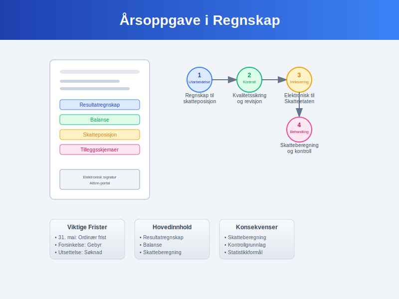
1.1 Definisjonen av Årsoppgave
Årsoppgave er den standardiserte skjemaet hvor virksomheter rapporterer sin økonomiske aktivitet for et helt regnskapsår. Rapporten inkluderer:
- Resultatoppstilling: Systematisk presentasjon av inntekter og kostnader
- Balanseoppstilling: Fullstendig oversikt over eiendeler, gjeld og egenkapital
- Tilleggsinformasjon: Spesifikke opplysninger for skatteberegning og statistikk
- Spesialskjemaer: Ytterligere dokumentasjon avhengig av virksomhetstype
1.2 Juridisk Grunnlag og Hjemmel
Plikten til å levere årsoppgave er hjemlet i:
- Skatteloven: Grunnleggende bestemmelser om rapporteringsplikt
- Ligningsloven: Detaljerte regler for dokumentasjon og kontroll
- Regnskapsloven: Krav til regnskapsmessig grunnlag
- Bokføringsloven: Dokumentasjons- og oppbevaringskrav
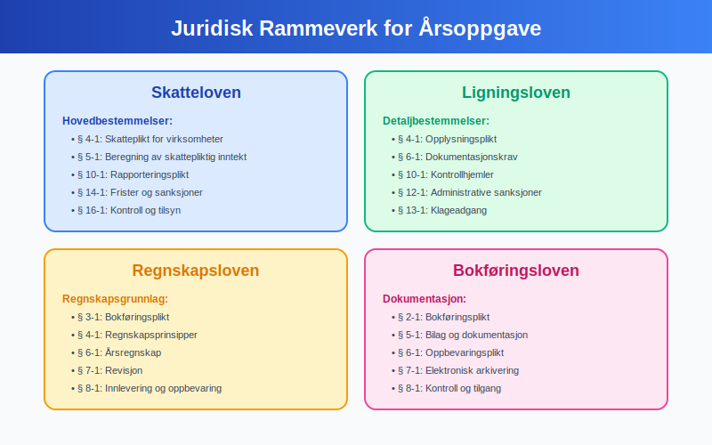
1.3 Formål med Årsoppgave
Samfunnsøkonomiske formål:
- Skatteinnkreving: Sikrer korrekt beregning av skatter og avgifter
- Statistikkproduksjon: Grunnlag for nasjonal regnskapsføring og økonomisk analyse
- Tilsynsvirksomhet: Muliggjør kontroll og etterlevelsestilsyn
- Forskningsdata: Bidrar til samfunnsforskning og politikkutvikling
Virksomhetsformål:
- Skatteoptimalisering: Identifisering av lovlige skattefordeler
- Finansiell dokumentasjon: Offisiell bekreftelse på økonomisk status
- Kredittgrunnlag: Dokumentasjon overfor finansinstitusjoner
- Strategisk planlegging: Grunnlag for fremtidig forretningsutvikling
Seksjon 2: Rapporteringspliktige Virksomheter
2.1 Omfattede Virksomhetstyper
Alle norske virksomheter med økonomisk aktivitet har rapporteringsplikt:
2.1.1 Aksjeselskaper og Allmennaksjeselskaper
Kapitalselskaper har omfattende rapporteringsplikt:
- Ordinære AS: Full årsoppgave med alle vedlegg
- ASA: Utvidet rapportering inkludert børsrelaterte opplysninger
- Holdingselskaper: Spesiell fokus på investeringer og konsernforhold
- Datterselskaper: Individuell rapportering uavhengig av konsernstruktur
Tilleggskrav for aksjeselskaper: I tillegg til årsoppgaven må alle aksjeselskaper levere aksjonærregisteroppgave som dokumenterer eierforhold og aksjonærstruktur.
2.1.2 Personlige Foretak og Enkeltpersonforetak
Enkeltpersonforetak har forenklet rapportering:
- Næringsdrivende: Næringsoppgave (N1) som del av personlig selvangivelse
- Primærnæringer: Spesialiserte skjemaer for landbruk og fiske
- Frilansere: Forenklet rapportering gjennom selvangivelse
- Små virksomheter: Reduserte krav avhengig av omsetning
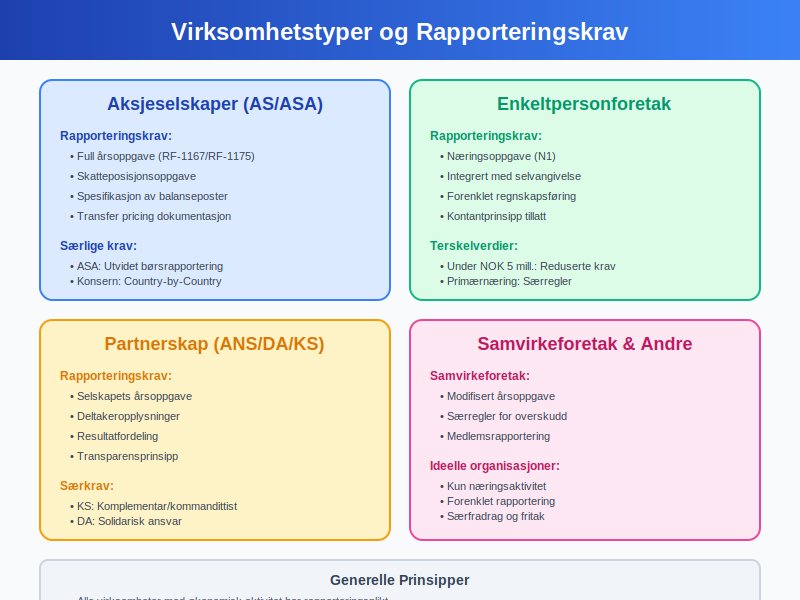
2.1.3 Partnerskap og Ansvarlige Selskaper
Samvirkeforetak og partnerskap:
- ANS og DA: Egen årsoppgave plus deltakeropplysninger
- Samvirkeforetak: Modifisert rapportering tilpasset samvirkestruktur
- Kommandittselskap: Separate rapporter for komplementar og kommandittister
- Fylkeskommuner og kommuner: Spesialiserte offentlige rapporteringsformer
2.2 Fritak og Unntak
2.2.1 Virksomheter med Begrenset Rapporteringsplikt
Små virksomheter kan kvalifisere for reduserte krav:
- Omsetningsgrense: Under NOK 5 millioner årlig omsetning
- Enkel virksomhet: Få transaksjoner og enkle økonomiske forhold
- Ideelle organisasjoner: Begrenset til næringsaktivitet
- Passive investeringsselskaper: Forenklet rapportering for rene investeringer
2.2.2 Midlertidige Fritak
Spesielle situasjoner kan gi midlertidig fritak:
- Oppstart: Nye virksomheter i etableringsfase
- Avvikling: Selskaper under avvikling med spesielle regler
- Konkurs: Modifiserte rapporteringskrav under konkursbehandling
- Restrukturering: Spesielle regler ved fusjon og fisjon
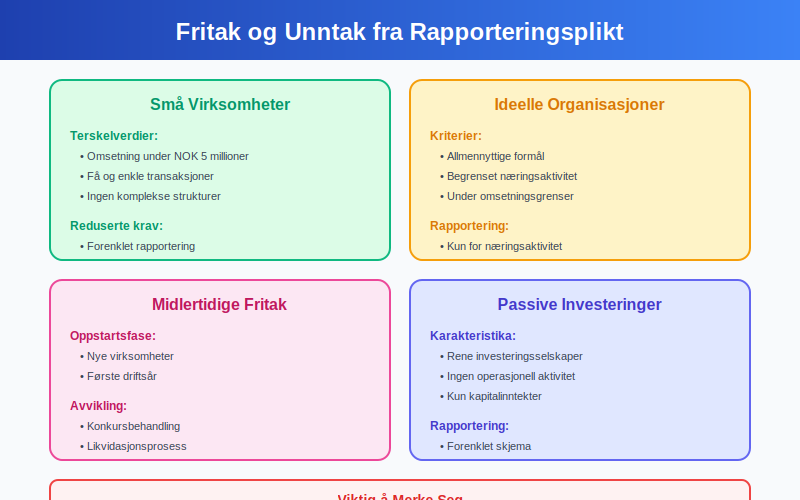
Seksjon 3: Innhold og Komponenter i Årsoppgave
3.1 Hovedskjemaer og Skjemastruktur
Årsoppgaven består av flere integrerte skjemaer som til sammen gir et komplett bilde av virksomhetens økonomiske aktivitet:
3.1.1 Resultatregnskap (RF-1167)
Resultatregnskapet presenterer virksomhetens inntekter og kostnader:
| Post | Beskrivelse | Referanse | Skattemessig Behandling |
|---|---|---|---|
| Salgsinntekt | Brutto salg av varer og tjenester | Note 1 | Inntektsføres ved levering |
| Varekostnad | Direkte kostnader ved solgte varer | Note 2 | Fradragsberettiget |
| Lønnskostnader | Total personalkostnad | Note 3 | Fradrag med begrensninger |
| Avskrivninger | Systematisk verdireduksjon | Note 4 | Etter skattemessige satser |
| Finansinntekter | Renter og utbytte | Note 5 | Delvis skattefritt |
3.1.2 Balanse (RF-1175)
Balansen viser virksomhetens økonomiske stilling på slutten av regnskapsåret:
Eiendeler (Aktiva):
- Anleggsmidler: Bygninger, maskiner og immaterielle eiendeler
- Omløpsmidler: Varelager, fordringer og kontanter
- Finansielle eiendeler: Aksjer, obligasjoner og andre investeringer
Egenkapital og Gjeld (Passiva):
- Egenkapital: Aksjekapital og opptjent egenkapital
- Langsiktig gjeld: Lån og forpliktelser over ett år
- Kortsiktig gjeld: Leverandørgjeld og andre kortsiktige forpliktelser
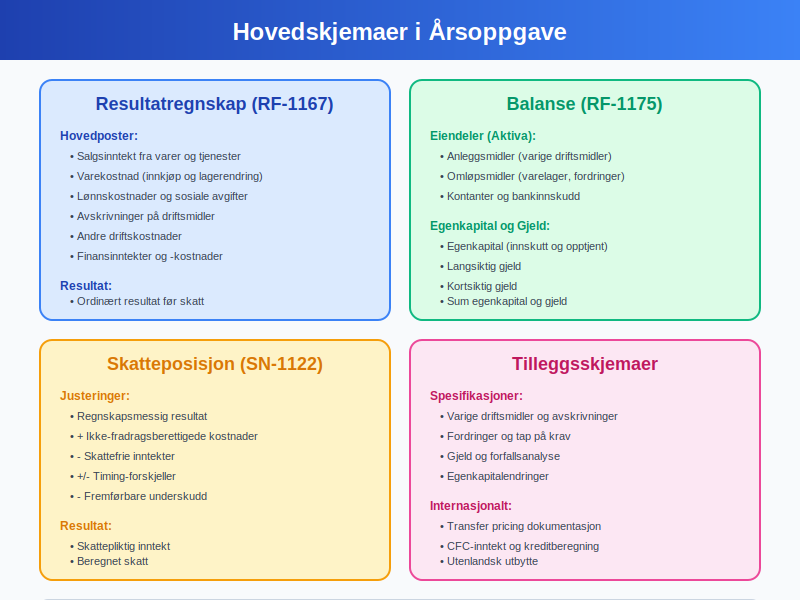
3.2 Tilleggsskjemaer og Spesifikke Opplysninger
3.2.1 Skatteposisjonsoppgave (SN-1122)
Skatteposisjon presenterer beregningen fra regnskapsmessig til skattepliktig resultat:
- Permanente forskjeller: Poster som aldri blir skattemessig relevante
- Midlertidige forskjeller: Timing-forskjeller mellom regnskap og skatt
- Fremførbare underskudd: Ubrukte skattemessige underskudd
- Utsatt skatt: Beregning av fremtidige skattekonsekvenser
3.2.2 Spesifikasjon av Balanseposter
Detaljerte oppgaver for utvalgte balanseposter:
- Varige driftsmidler: Anskaffelseskost, avskrivninger og bokført verdi
- Fordringer: Alteringsanalyse og tapsavsettelser
- Gjeld: Forfallsanalyse og renteforhold
- Egenkapital: Endringer i aksjekapital og opptjent kapital
3.2.3 Internasjonale Forhold
Grenseoverskridende transaksjoner krever spesiell rapportering:
- Transfer pricing: Dokumentasjon av internprising
- Kontrollerte utenlandske selskaper (CFC): Rapportering av CFC-inntekt
- Utbytte fra utlandet: Skattegrunnlag og kreditberegning
- Permanent etablering: Aktivitet i utlandet gjennom fast driftssted
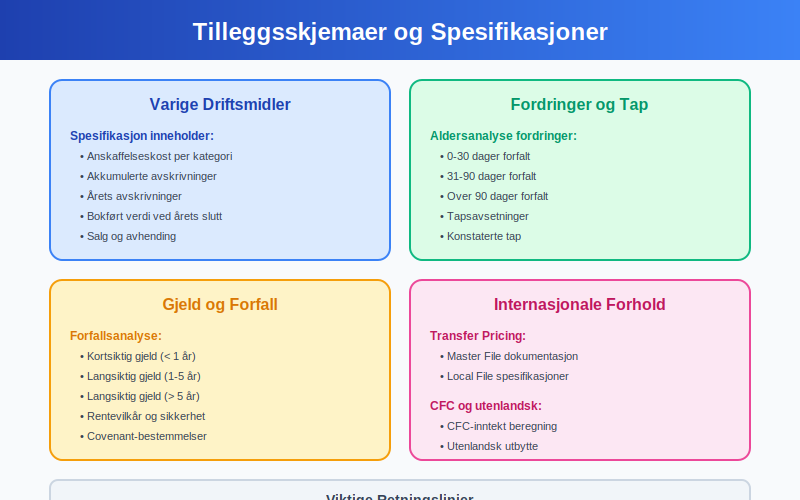
Seksjon 4: Tidsfrister og Innleveringsprosess
4.1 Ordinære Frister
Årsoppgaven har strenge tidsfrister som må overholdes:
4.1.1 Hovedregel for Innlevering
Ordinær frist: 31. mai følgende år
- Aksjeselskaper: Senest 31. mai for foregående regnskapsår
- Personlige foretak: Integrert med selvangivelse, frist 30. april/31. mai
- Samvirkeforetak: Samme frist som aksjeselskaper
- Offentlige virksomheter: Kan ha spesielle frister
4.1.2 Spesielle Frister
Forskjøvet regnskapsår:
- Variert regnskapsår: Frist 5 måneder etter regnskapsårets slutt
- Avvikende regnskapsår: Tilpassede frister for spesielle bransjer
- Konsernrapportering: Koordinerte frister for morselskap og datterselskaper
4.2 Utsettelse og Forsinkelse
4.2.1 Søknad om Utsettelse
Forhåndssøknad kan innvilges i spesielle tilfeller:
- Ekstraordinære omstendigheter: Force majeure situasjoner
- Komplekse regnskapsforhold: Omfattende transaksjoner som krever ekstra tid
- Systemproblemer: Tekniske utfordringer med rapporteringssystemer
- Revisorkapasitet: Begrenset tilgang på kvalifiserte revisorer
4.2.2 Konsekvenser av Forsinkelse
Sanksjonssystem for for sen innlevering:
| Forsinkelse | Gebyr | Ytterligere Konsekvenser |
|---|---|---|
| 1-30 dager | NOK 5.000 | Formell påminnelse |
| 31-60 dager | NOK 10.000 | Tvangsmulkt kan ilegges |
| Over 60 dager | NOK 20.000 + | Ytterligere sanksjonsmuligheter |
| Gjentagende | Forhøyet gebyr | Potensielle strafferettslige konsekvenser |
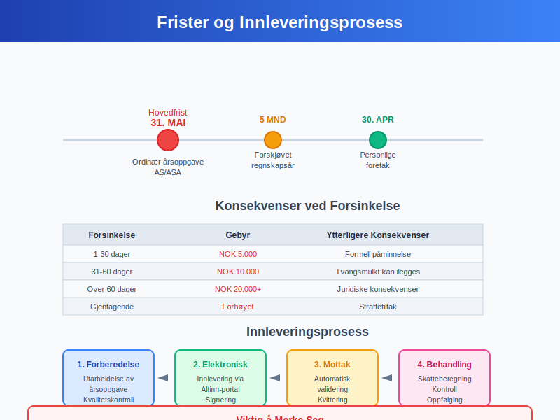
4.3 Elektronisk Innlevering
4.3.1 Altinn-plattformen
Digital rapportering gjennom Altinn er standardløsning:
- Obligatorisk elektronisk levering: For alle virksomheter over visse terskler
- Brukerautentisering: ID-porten eller virksomhetssertifikat
- Integrasjon: Direkteinnlevering fra regnskapssystemer
- Bekreftelse: Automatisk kvittering ved mottatt oppgave
4.3.2 Systemintegrasjon
Regnskapssystemer kan integreres direkte:
- API-tilkobling: Direkte kommunikasjon mellom systemer
- Standardformater: XBRL og andre strukturerte rapporteringsformater
- Automatisk validering: Kontroll av fullstendighet og konsistens
- Feilhåndtering: Automatisk identifikasjon og rapportering av feil
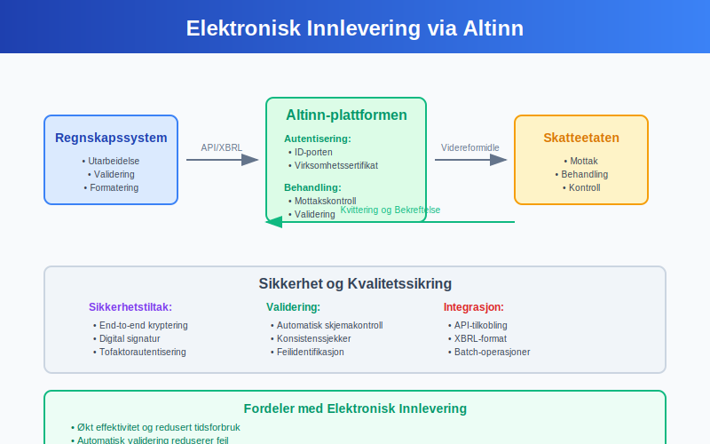
Seksjon 5: Skatteberegning og Skattepliktig Inntekt
5.1 Fra Regnskapsmessig til Skattepliktig Resultat
Transformasjonsprosessen fra regnskapsføring til skatteberegning krever systematiske justeringer:
5.1.1 Permanente Forskjeller
Permanente forskjeller påvirker aldri fremtidig skatteberegning:
Ikke-fradragsberettigede kostnader:
- Representasjon over grensen: Kun 50% av representasjonskostnader er fradragsberettiget
- Gaver og tilskudd: Begrensede fradragsmuligheter for gaver til ansatte
- Bøter og sanksjoner: Administrative og strafferettslige sanksjoner
- Private kostnader: Kostnader uten tilknytning til næringsvirksomhet
Skattefrie inntekter:
- Utbytte: Fritaksmodellen for utbytte fra kvalifiserte eierandeler
- Gevinster: Fritaksmodellen for salg av aksjer og andeler
- Konsernbidrag: Mottatte konsernbidrag mellom norske selskaper
- Offentlige tilskudd: Visse former for offentlig støtte
5.1.2 Midlertidige Forskjeller (Timing-forskjeller)
Midlertidige forskjeller utlignes over tid og skaper utsatt skatt:
Avskrivningsforskjeller:
- Regnskapsmessige avskrivninger: Lineære eller degressiv over økonomisk levetid
- Skattemessige avskrivninger: Saldoavskrivning etter maksimalsatser
- Forskjellsbehandling: Ulike prinsipper skaper timing-forskjeller
- Skattemessige saldogrupper: Spesifikke avskrivningssatser per aktivatype
Andre timing-forskjeller:
- Nedskrivninger: Ulik behandling av verdijusteringer
- Avsetninger: Skattemessig fradrag først ved faktisk utbetaling
- Periodiseringer: Forskjeller i timing for inntekts- og kostnadsføring
- Valutatap og -gevinst: Ulik realisasjonstidspunkt
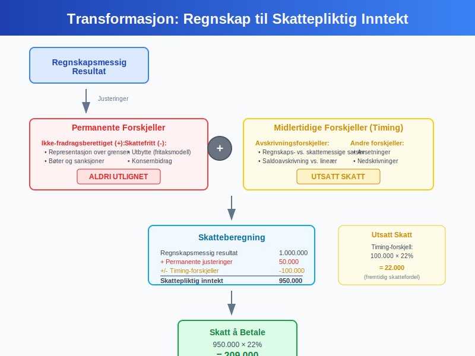
5.2 Spesielle Skatteposisjoner
5.2.1 Framførbare Underskudd
Skattemessige underskudd kan fremføres til senere års anvendelse:
- Fremføringsprinsinpp: Ubegrenset fremføring i tid
- Anvendelse: Motregning mot fremtidige positive inntekter
- Prioritetsrekkefølge: Eldste underskudd anvendes først
- Dokumentasjon: Kontinuerlig sporing av ubrukte underskudd
5.2.2 Tonnasjeskatteordning
Spesiell beskatningsform for skipsfart:
- Kvalifikasjonskrav: Strategisk viktig skipsfart i internasjonal fart
- Beregningsgrunnlag: Tonnasje fremfor inntekt som skattebase
- Særregler: Modifiserte regler for avskrivninger og finansiering
- Tidsbegrensning: Bindende valg for 10-årsperioder
5.2.3 Petroleum og Kraftproduksjon
Særskilte skatteordninger for naturressursindustrier:
- Petroleumsskatt: Ekstra skatt på 56% utover ordinær selskapsskatt
- Grunnrenteskatt: Særskatt på vannkraftproduksjon
- Spesielle fradrag: Fritaksperioder og særfradrag for leting og utvikling
- Uplift-ordning: Ekstra avskriningsgrunnlag for investeringer
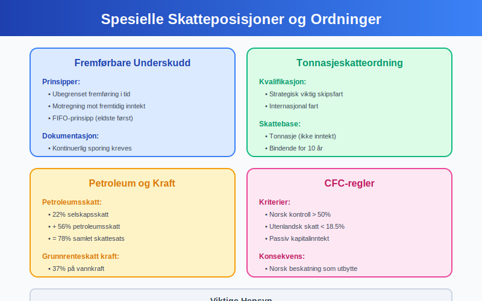
5.3 Internasjonale Skatteforhold
5.3.1 Transfer Pricing
Internprising mellom nærstående selskaper må dokumenteres:
- Armlengdeprinsippet: Prising som mellom uavhengige parter
- Dokumentasjonskrav: Master file og local file dokumentasjon
- Forhåndssamtykke (APA): Bindende avtaler om prisfastsettelse
- Risikostyring: Identifikasjon og håndtering av transfer pricing-risiko
5.3.2 Kontrollerte Utenlandske Selskaper (CFC)
CFC-reglene sikrer norsk beskatning av passiv kapitalinntekt:
- Kontrollterskler: Norsk kontroll over 50% av stemmer eller kapital
- Skattesatskriterium: Utenlandsk effektiv skattesats under 18.5%
- Gjennomskjæring: Norsk beskatning av CFC-inntekt som utbytte
- Beregningsmetodikk: Systematisk beregning av tilleggsbeskatning
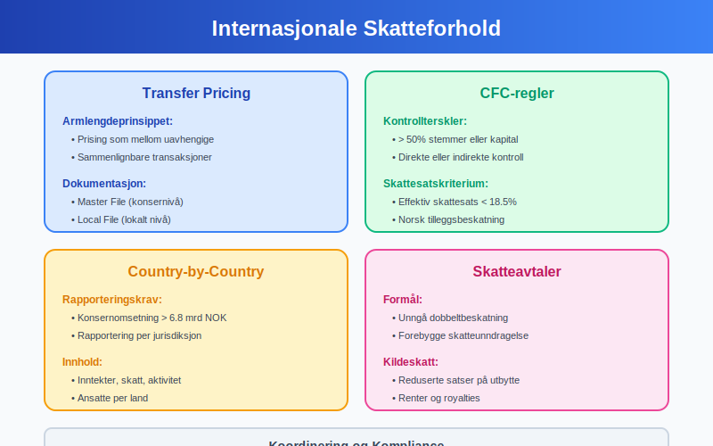
Seksjon 6: Kontroll og Etterlevelse
6.1 Skatteforvaltningens Kontrollvirksomhet
Skatteetaten har omfattende kontrollmyndighet for å sikre korrekt rapportering:
6.1.1 Automatiserte Kontroller
Systemkontroller identifiserer potensielle feil og avvik:
- Konsistenssjekker: Kryssjekk mellom relaterte poster i årsoppgaven
- Bransjesammenligninger: Avviksanalyse mot branjesnøkkeltall
- Historiske trender: Identifikasjon av uvanlige endringer fra tidligere år
- Manuell oppfølging: Flagging av saker for manuell gjennomgang
6.1.2 Målrettede Kontroller
Risikobaserte kontroller fokuserer på høyrisiko områder:
- Transfer pricing: Kontroll av internasjonale konsern-transaksjoner
- Fradragskontroll: Verifisering av ekstraordinære eller store fradrag
- Omsetningsrapportering: Sammenligning med MVA-rapportering og tredjeparts opplysninger
- Skatteplanlegging: Analyse av aggressive skatteplanleggingsstrukturer
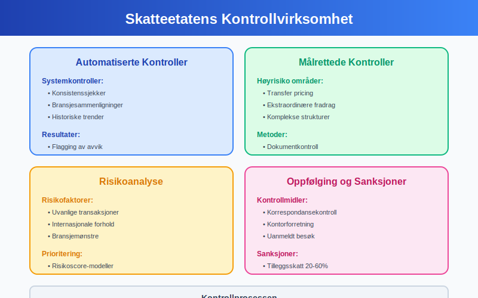
For en grundig oversikt over revisjon i Norge, se vår artikkel Revisjon.
6.2 Revisjonsplikt og Ekstern Kontroll
6.2.1 Revisjonsplikt for Årsoppgave
Revisjonsplikt avhenger av virksomhetens størrelse og struktur:
Obligatorisk revisjon:
- Aksjeselskaper: Alle AS med omsetning over NOK 5 millioner
- Allmennaksjeselskaper: Alle ASA uavhengig av størrelse
- Datterselskaper: I konsern med revisjonsplikt
- Spesielle bransjer: Finansinstitusjoner og andre regulerte virksomheter
Frivillig revisjon:
- Små AS: Under terskelverdiene kan velge revisjon
- Kredittformål: Revisjon for å tilfredsstille eksterne krav
- Kvalitetssikring: Frivillig revisjon for ekstra kvalitetskontroll
6.2.2 Revisors Ansvar og Oppgaver
Statsautoriserte revisorer har spesifikt ansvar relatert til årsoppgaven:
- Attestering: Bekreftelse på at årsoppgaven stemmer med revidert regnskap
- Kvalitetskontroll: Gjennomgang av skatteberegninger og justeringsposter
- Rapportering: Rapportering av vesentlige forhold til Skatteetaten
- Rådgivning: Proaktiv rådgivning om skattemessige konsekvenser
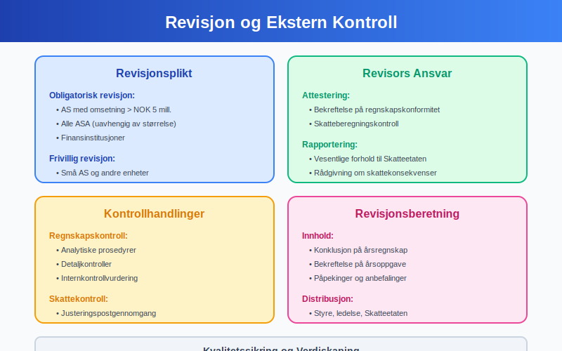
6.3 Sanksjoner og Rettsmidler
6.3.1 Administrative Sanksjoner
Skatteetaten kan ilegge ulike former for sanksjoner:
Tilleggsskatt:
- Uaktsom overtredelse: 20% tilleggsskatt av utlignet tilleggsskatt
- Grov uaktsomhet: 40% tilleggsskatt ved grovere forhold
- Forsett: 60% tilleggsskatt ved forsettlige forhold
- Beregningsgrunnlag: Tilleggsskatt beregnes av hovedstol og renter
Andre sanksjoner:
- Forsinkelsesgebyr: Ved for sen innlevering av årsoppgave
- Tvangsmulkt: Ved vedvarende manglende innlevering
- Ansvarliggjøring: Personlig ansvar for ledelse i grove tilfeller
6.3.2 Rettsmidler og Klageadgang
Rettssikkerhet sikres gjennom etablerte klageordninger:
- Klagerett: Klage til skatteklagenemnda innen 6 uker
- Dokumentasjonsrett: Rett til innsyn i saksbehandlingsgrunnlag
- Domstolsprøving: Adgang til søksmål mot skattevedtak
- Midlertidig stansning: Mulighet for midlertidig stansning av innkreving
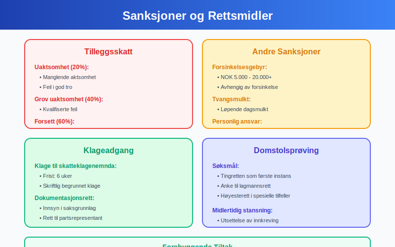
Seksjon 7: Bransjespesifikke Forhold
7.1 Særlige Bransjetilpasninger
Ulike bransjer har spesifikke rapporteringskrav og skatteregler:
7.1.1 Finansielle Institusjoner
Banker og finansselskaper har utvidede rapporteringskrav:
- Finanstilsynets rapportering: Parallell rapportering til flere myndigheter
- Særskilte skjemaer: Spesialtilpassede årsoppgaveskjemaer
- Avsetningsregler: Spesielle regler for tapsavsetninger
- Verdipapirhandel: Komplekse regler for finansielle instrumenter
7.1.2 Forsikringsselskaper
Forsikringsbransjen har særegne regnskaps- og skatteregler:
- Forsikringstekniske avsetninger: Aktuarberegninger og risikoevaluering
- Livsforsikring: Langsiktige forpliktelser og investeringsforvaltning
- Skadeforsikring: Skadereserver og gjenforsikring
- Solvensregulering: Kapitaldekning og solvensmargin
7.1.3 Eiendomsutvikling og -forvaltning
Eiendomsbransjen har spesielle verdivurderings- og periodiseringsspørsmål:
- Prosjekteiendommer: Vurdering av eiendommer under utvikling
- Leieinntekter: Periodisering og indeksregulering
- Tomteselskap: Særregler for tomteutvikling og -salg
- REIT-struktur: Eiendomsinvesteringsselskaper med særskatteordning
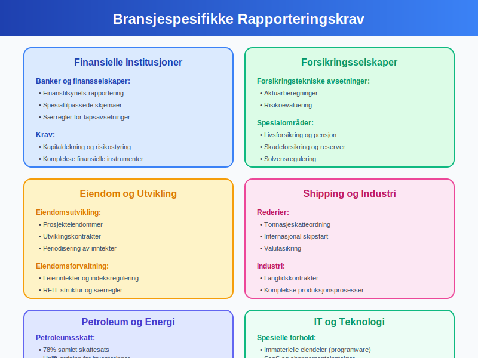
7.2 Internasjonale Konsern
7.2.1 Konsernrapportering
Multinasjonale konsern møter komplekse rapporteringskrav:
- Country-by-Country Reporting: Detaljert rapportering per jurisdiksjon
- Master File/Local File: Dokumentasjon av transfer pricing-politikk
- Substansrapportering: Dokumentasjon av økonomisk realitet
- Komparative studier: Benchmarking mot sammenlignbare transaksjoner
7.2.2 Hybridt finansiering og Instrumenter
Komplekse finansielle strukturer krever spesiell oppmerksomhet:
- Hybride instrumenter: Instrumenter med både gjelds- og egenkapitalkarakter
- Konvertible obligasjoner: Sammensatte finansielle instrumenter
- Strukturerte produkter: Komplekse derivatinstrumenter
- Skattemessig asymmetri: Ulik behandling i ulike jurisdiksjoner
Seksjon 8: Digitalisering og Fremtidige Trender
8.1 Teknologisk Utvikling
Digitaliseringen transformerer årsoppgaveprosessen fundamentalt:
8.1.1 Automatisering av Rapportering
Teknologiske løsninger effektiviserer rapporteringsprosessen:
- AI-basert kategorisering: Automatisk klassifisering av transaksjoner
- Machine learning: Læring fra historiske mønstre for bedre nøyaktighet
- Robotprosessautomatisering (RPA): Automatisering av repetitive oppgaver
- Intelligent dokumenthåndtering: Automatisk uttrykk av informasjon fra dokumenter
8.1.2 Sanntidsrapportering
Real-time data muliggjør kontinuerlig overvåking:
- Kontinuerlig avstemming: Løpende avstemming mellom systemer
- Prediktiv analyse: Prognoser for skatteposisjon og resultater
- Tidlig varslingssystemer: Automatisk identifikasjon av potensielle problemer
- Dashboard-løsninger: Real-time oversikt over nøkkeltall og status
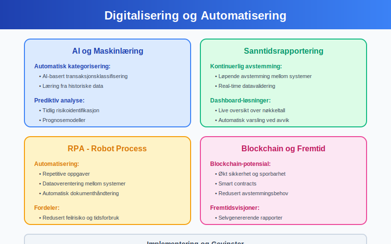
8.2 Regulatoriske Innovasjoner
8.2.1 Strukturerte Data og XBRL
Standardiserte rapporteringsformater forbedrer datakvalitet:
- XBRL-implementering: Utvidet bruk av maskinlesbare formater
- Taksonomiutvikling: Standardiserte dataelementer og definisjoner
- Validering og kvalitetskontroll: Automatisk kontroll av konsistens og fullstendighet
- Interoperabilitet: Forbedret datautveksling mellom systemer
8.2.2 Kunstig Intelligens i Tilsyn
AI-teknologi revolusjonerer skatteforvaltningens kontrollvirksomhet:
- Anomalideteksjon: Automatisk identifikasjon av uvanlige mønstre
- Risikoprofilering: Intelligent vurdering av kontrollbehov
- Prediktiv modellering: Prognoser for skatteunndragelse og feil
- Automated audit: Delvis automatisering av kontrollaktiviteter
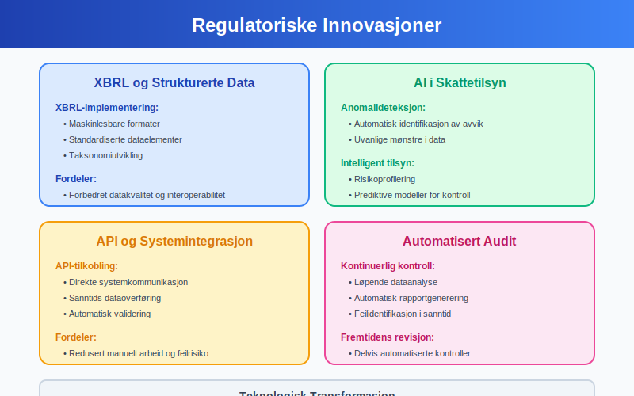
8.3 Bærekraft og ESG-rapportering
8.3.1 Integrert Rapportering
Bærekraftsrapportering integreres stadig mer med finansiell rapportering:
- ESG-målinger: Environmental, Social and Governance indikatorer
- Carbon accounting: Rapportering av klimagassutslipp og karbonfotavtrykk
- Sosialt ansvar: Dokumentasjon av samfunnsansvar og etiske praksis
- Styrings- og ledelsesstrukturer: Transparens omkring beslutningsprosesser
8.3.2 Regulatory Tilpasning
Lovgivning tilpasser seg økte krav til bærekraftsrapportering:
- EU-taksonomi: Klassifikasjon av bærekraftige økonomiske aktiviteter
- CSRD-implementering: Corporate Sustainability Reporting Directive
- Dobbel vesentlighet: Impact og finansiell vesentlighetsvurdering
- Assurance-krav: Ekstern verifisering av bærekraftsdata
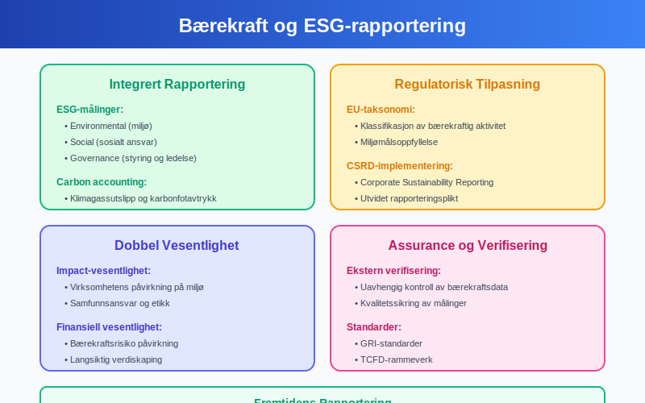
Seksjon 9: Beste Praksis og Anbefalinger
9.1 Forberedelse og Planlegging
Suksessful årsoppgavearbeid krever systematisk tilnærming gjennom hele året:
9.1.1 Årshjul for Årsoppgave
Strukturert årsplanlegging sikrer rettidig og korrekt rapportering:
Første kvartal:
- Januar: Forberedelse av foregående års årsoppgave
- Februar: Innsamling av dokumentasjon og avstemminger
- Mars: Utarbeidelse og kvalitetskontroll
Andre kvartal:
- April: Ferdigstillelse og intern godkjenning
- Mai: Innlevering til Skatteetaten innen fristen
- Juni: Oppfølging av eventuelle henvendelser fra myndighetene
Tredje og fjerde kvartal:
- Juli-September: Planlegging for kommende år og oppdatering av rutiner
- Oktober-Desember: Løpende forberedelser og avstemminger
9.1.2 Kompetanseutvikling
Kontinuerlig læring er essensielt for kvalitetssikring:
- Faglig oppdatering: Følge med på endringer i skattelovgivning
- Systemkunnskap: Holde seg oppdatert på rapporteringssystemer
- Bransjekunnskap: Forstå spesifikke utfordringer for egen bransje
- Tverrfaglig samarbeid: Koordinering mellom regnskap, skatt og jus
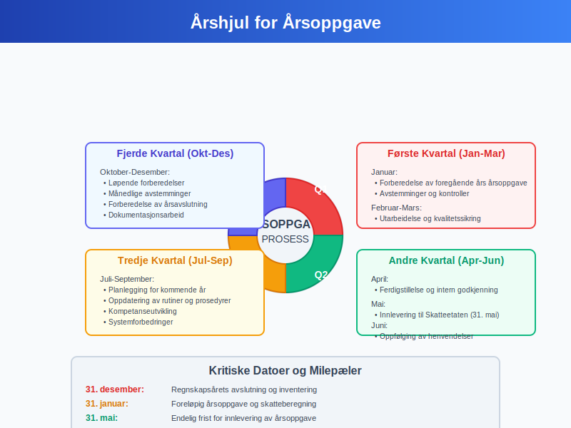
9.2 Kvalitetssikring og Internkontroll
9.2.1 Systematiske Kontrollrutiner
Robuste kvalitetskontroller minimerer risiko for feil:
Fire-øyne-prinsippet:
- Utarbeidelse: En person utarbeider oppgaven
- Gjennomgang: Annen person gjennomgår for feil og manglar
- Godkjenning: Ansvarlig leder godkjenner før innlevering
- Dokumentasjon: Alle kontrollhandlinger dokumenteres
Analytiske kontroller:
- Trendsanalyse: Sammenligning med tidligere år
- Bransjesammenligninger: Benchmarking mot bransjenorm
- Forholdstall: Kontroll av sentrale finansielle nøkkeltall
- Rimelighetskontroller: Vurdering av usannsynlige størrelser
9.2.2 Dokumentasjon og Arkivering
Omfattende dokumentasjon sikrer etterprøvbarhet og læring:
- Arbeidsoppgaver: Detaljerte beregninger og forutsetninger
- Kontrollhandlinger: Dokumentasjon av alle kvalitetskontroller
- Korrespondanse: Arkivering av kommunikasjon med eksterne parter
- Backup og sikkerhet: Sikring av digital dokumentasjon
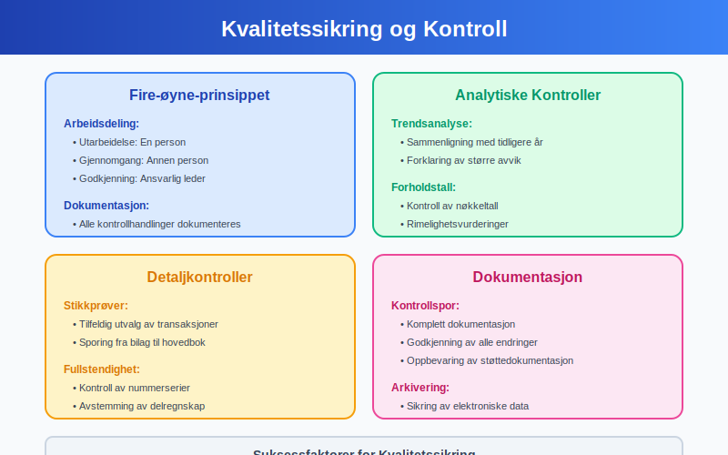
9.3 Teknologi og Systemoptimalisering
9.3.1 Systemintegrasjon
Effektiv systemlandskap reduserer manuelt arbeid og feilrisiko:
- ERP-integrasjon: Sømløs dataflyt fra regnskapssystem til rapportering
- Automatiserte avstemminger: Eliminering av manuelle avstemmingsprosesser
- Valideringsregler: Innbyggede kontroller for datakvalitet
- Backup og redundans: Sikring mot systemfeil og datatap
9.3.2 Data Analytics og Innsikt
Avanserte analytiske verktøy gir bedre innsikt og kvalitet:
- Dashboard-løsninger: Real-time oversikt over status og nøkkeltall
- Trendsanalyse: Identifikasjon av mønstre og utviklingstrender
- Avviksanalyse: Automatisk flagging av uvanlige transaksjoner
- Prognostisering: Prediktive modeller for fremtidig utvikling
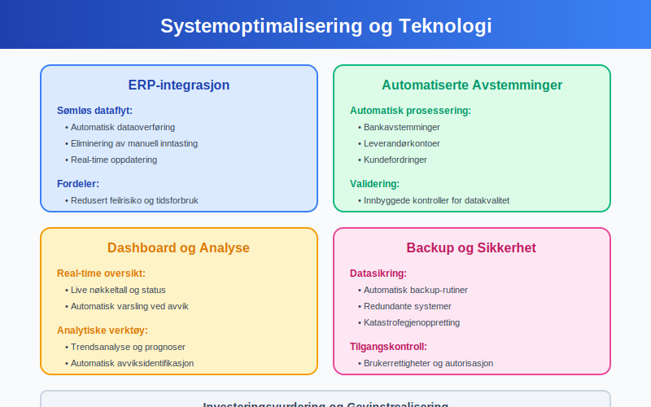
Seksjon 10: Risikoer og Utfordringer
10.1 Vanlige Feilkilder
Identifikasjon av typiske feil hjelper virksomheter å unngå kostbare misstake:
10.1.1 Regnskapsmessige Feil
Fundamentale regnskapsfeil påvirker årsoppgavens kvalitet:
- Periodiseringsfeil: Feil timing av inntekts- og kostnadsføring
- Klassifiseringsfeil: Feil plassering av poster i regnskapet
- Målingsfeil: Feil verdsettelse av eiendeler og forpliktelser
- Fullstendighetsfeil: Manglende registrering av transaksjoner
10.1.2 Skattemessige Feilvurderinger
Skatteberegningsfeil kan få alvorlige konsekvenser:
- Permanente vs. midlertidige forskjeller: Feil kategorisering av skatteforskjeller
- Fradragsberettigelse: Feil vurdering av fradragsmuligheter
- Transfer pricing: Manglende dokumentasjon eller feil prisfastsettelse
- Internasjonale forhold: Komplekse regler for grenseoverskridende transaksjoner
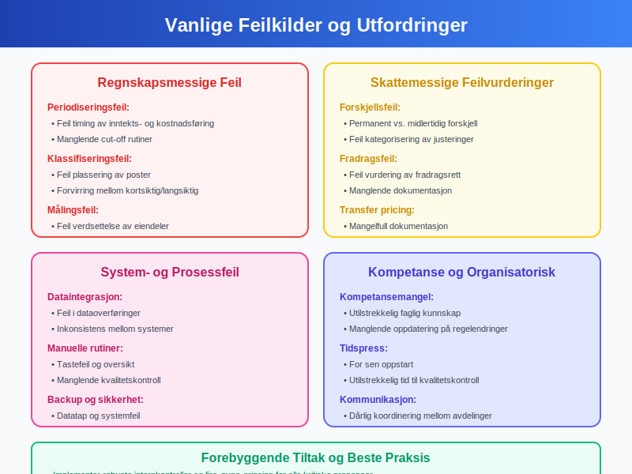
10.2 Compliance-risiko
10.2.1 Regulatorisk Risiko
Endringer i lovverk skaper kontinuerlige utfordringer:
- Ny lovgivning: Implementering av nye regler og standarder
- Tolkningsendringer: Endret praksis fra myndigheter
- Internasjonale standarder: Tilpasning til globale rapporteringsstandarder
- Overgangsbestemmelser: Håndtering av midlertidige ordninger
10.2.2 Systemrisiko
Teknologiske sårbarheter kan kompromittere rapporteringsprosessen:
- Systemfeil: Tekniske problemer med regnskaps- eller rapporteringssystemer
- Cybersikkerhet: Databrudde og digital sabotasje
- Integrasjonsutfall: Feil i dataoverføringer mellom systemer
- Manglende backup: Tap av kritiske data og dokumentasjon
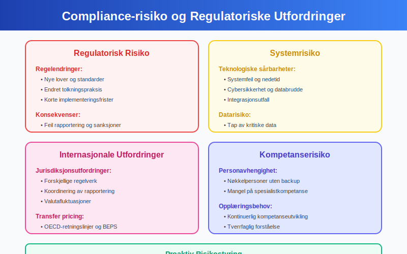
10.3 Organisatoriske Utfordringer
10.3.1 Kompetanseutfordringer
Mangel på kvalifisert personale er en økende utfordring:
- Kompleksitet: Økte krav til faglig kompetanse
- Kapasitetsmangel: Begrenset tilgang på erfarne medarbeidere
- Kompetanseutvikling: Behov for kontinuerlig opplæring
- Ressursplanlegging: Balansering av interne og eksterne ressurser
10.3.2 Endringshåndtering
Organisatoriske endringer påvirker rapporteringsevnen:
- Selskapsstrukturer: Fusjoner, oppdelinger og omorganiseringer
- Systembytte: Implementering av nye teknologiløsninger
- Prosessendringer: Utvikling av nye rutiner og arbeidsmetoder
- Kulturelle faktorer: Sikring av kvalitetsbevisst organisasjonskultur
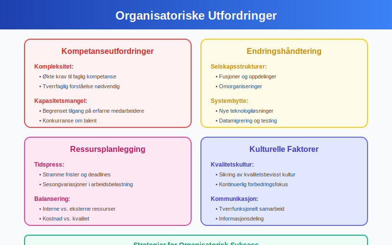
Konklusjon
Årsoppgave er en omfattende og kritisk virksomhet som krever systematisk tilnærming, høy faglig kompetanse og robust kvalitetssikring. Som den sentrale rapporteringsmekanismen mellom norsk næringsliv og skattemyndigheter, spiller årsoppgaven en fundamental rolle i skatteinnkrevingen, samfunnsøkonomisk planlegging og tilsynsvirksomhet.
Sentrale Suksessfaktorer
Grundig forberedelse:
- Tidlig start med systematisk planlegging gjennom året
- Løpende avstemminger og kvalitetskontroller
- Tydelig ansvarsdeling og kompetent personale
Teknisk presisjon:
- Korrekt transformasjon fra regnskapsmessig til skattepliktig resultat
- Nøyaktig håndtering av permanente og midlertidige forskjeller
- Systematisk dokumentasjon av alle vurderinger og beslutninger
Regulatorisk compliance:
- Overholdelse av frister og formelle krav
- Korrekt anvendelse av bransjespesifikke regler
- Proaktiv håndtering av internasjonale skatteforhold
Fremtidsperspektiver
Teknologisk utvikling vil fortsette å transformere årsoppgaveprosessen med økt automatisering, kunstig intelligens og sanntidsrapportering. Samtidig vil regulatoriske krav, særlig knyttet til bærekraft og transparens, trolig øke i kompleksitet og omfang.
Virksomheter som investerer i robust teknologi, kompetent personale og systematiske prosesser vil være best posisjonert for å møte fremtidens utfordringer. Årsoppgaven vil forbli en hjørnestein i norsk skatte- og regnskapssystem, men måten den utarbeides og leveres på vil utvikle seg kontinuerlig.
Den moderne årsoppgaven representerer mer enn kun skatteoverholdelse - den fungerer som en strategisk kommunikasjonskanal hvor virksomheter demonstrerer sin samfunnsansvar, økonomiske gjennomsiktighet og bidrag til fellesskapet. En vellykket årsoppgave bygger ikke bare tillit til skattemyndighetene, men styrker også virksomhetens kredibilitet overfor alle interessenter og støtter langsiktig verdisskaping.